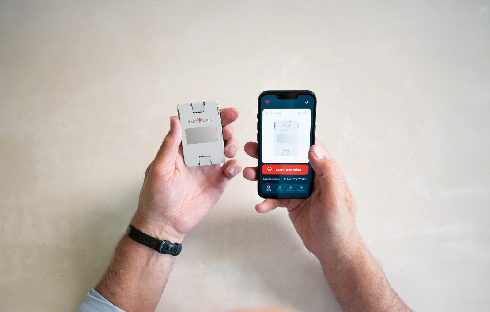
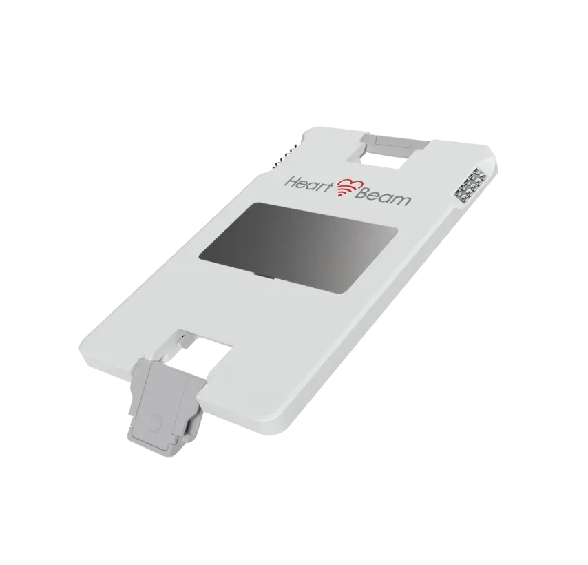

HeartBeam, Inc. · Cardiac monitoring
Three directions in. A twelve-lead ECG out.
HeartBeam makes a credit-card-sized ECG recorder that captures the heart’s electrical signal from three non-coplanar directions and synthesizes a 12-lead ECG from it. The FDA has cleared the system for arrhythmia assessment, and only that. Management now calls heart attack detection its first priority, an indication that is not cleared. The company has no revenue, and its filings state substantial doubt about its ability to continue as a going concern. 10-K, Item 1 10-Q Jun 30, Note 2 Sep 21 letter
A standard 12-lead ECG stays in the clinic. Symptoms do not.
The 10-K calls the 12-lead ECG the gold standard, and says it is impractical to keep one next to a patient when symptoms begin outside a clinical setting, because recording it means attaching multiple electrodes with professional help. 10-K, Item 1
- ~20MUS adults with diagnosed coronary artery disease, and about 130 million living with cardiovascular disease, per the American Heart Association figures the 10-K cites 10-K, Market Opportunity
- 40 s“Every 40 seconds someone in the US has a heart attack,” the 10-K states 10-K, Market Opportunity
- <20%of chest-pain emergency department visits end in a diagnosis of a life-threatening condition, per the 10-K; chest pain is the second most common reason for an ED visit in patients over 45 10-K, Market Opportunity
Patients with heart attack symptoms often wait more than two hours before seeking care, the company said on June 30, citing two published papers. It argues that a clinical-grade ECG recorded when symptoms begin could shorten that wait. Whether HeartBeam’s technology can do this for heart attacks is what its studies are testing; no FDA indication yet says it can. Jun 30 release
The 10-K names consumer single-lead devices and patch monitors as established alternatives that are intended for rhythm abnormalities, not for ischemia or heart attack. It also lists two FDA-cleared devices that give information on potential ischemic events outside a clinic, the implantable AngelMed Guardian and SHL Telemedicine’s Smartheart home 12-lead, which it calls larger and more complex than HeartBeam’s, and it says many competitors have significantly greater resources. 10-K, Competition
Three directions recorded. Twelve leads synthesized.
The device records the heart’s electrical activity from three non-coplanar directions through integrated electrodes, with no cables, and sends it by Bluetooth to a smartphone. Cloud software checks signal quality, synthesizes a 12-lead ECG with a personalized transformation matrix, and overlays the patient’s own baseline recording for the physician. 10-K, Item 1


- Size
- About the size of a credit card, about 1/8 inch (4 mm) thick
- Weight
- About 1 ounce (28 grams)
- Electrodes
- Integrated; no cables
- Link
- Bluetooth to a smartphone
- FDA class
- Class II
Device facts from the 10-K, Item 1.
- 01The app guides the patient.The patient app gives step-by-step guidance. heartbeam.com
- 02The patient records.All the patient does is press the device against the chest. 10-K, Item 1
- 03The cloud synthesizes.The recording goes to the HeartBeam cloud, which checks signal quality and synthesizes the 12-lead ECG. 10-K, Item 1
- 04A physician reviews.An on-call, board-certified cardiologist reviews it and follows up with the patient, per the company. 10-K, Item 1 heartbeam.com
What the company says sets it apart
- 01
Cable-free
Electrodes are built into the card; the patient presses it to the chest. A standard 12-lead machine needs a trained professional to place electrodes. 10-K, Item 1
- 02
Three directions into twelve leads
The signal is collected along three non-coplanar directions and converted with a personalized transformation matrix into a familiar 12-lead display. 10-K, Item 1
- 03
A personal baseline
Each recording can be read against the patient’s own asymptomatic recording; the software overlays the two for the physician. 10-K, Item 1
- 04
Patents
The 10-K counts 25 issued patents (17 in the US, 8 outside it) and 35 pending applications (13 US, 22 outside). The Jun 30 10-Q says 26 issued but still itemizes 17 US and 8 outside (25), mentions a US patent awarded in July 2026, and counts 33 pending (11 US, 22 outside). 10-K, Intellectual Property 10-Q Jun 30, MD&A
What the FDA has cleared, and what it has not.
The clearance covers manual assessment of a short list of non-life-threatening arrhythmias. Heart attack assessment is the company’s stated first priority, and it is not cleared.
Cleared by the FDANot clearedThe ring on the line marks Oct 5, 2026: Breakthrough Device Designation, which is a designation and not a clearance.
Cleared Arrhythmia assessment
510(k) clearance of the credit-card-sized 3D ECG recorder, for arrhythmia assessment. 10-K, Item 1 8-K Nov 21, 2025
A Not Substantially Equivalent letter from the FDA on the 12-lead synthesis software’s 510(k). The company said it stood behind its clinical data and would work with the FDA. 8-K Nov 21, 2025
510(k) clearance of the 12-lead synthesis software for the assessment of arrhythmias, which the company said followed a successful appeal of the NSE determination. Dec 10, 2025 release
“The synthesized 12-Lead ECG output is solely intended for manual assessment of normal sinus rhythm and the following non-life-threatening arrhythmias: sinus arrhythmia, sinus tachycardia, sinus bradycardia, atrial premature complexes, atrial fibrillation, and ventricular premature complex.”
The output is “similar, but not identical,” to the same leads of a standard diagnostic 12-lead ECG, and the software “is not intended to replace a standard 12-Lead ECG.” Cleared Indications for Use, heartbeam.com
Not cleared The next indications
- Heart attack
The indications text says the output is “not intended for the assessment of any other arrhythmia or conditions,” and names myocardial infarction and ischemia among them. The company is pursuing an expanded indication. On Oct 5, 2026 it said the FDA granted Breakthrough Device Designation, a program that gives prioritized FDA interaction and is not a clearance. It said the designation was supported by proof-of-concept data presented at the 2025 American Heart Association Scientific Sessions and by findings from the ALIGN-ACS pilot. It said it expects to seek FDA alignment on a multicenter pivotal study design in the coming months and to begin enrolling shortly after. Oct 5 release Cleared indications
- 12-lead patch
Described as investigational and not FDA cleared. A working prototype exists, and a pilot of about 50 patients at two hospitals in Belgrade, Serbia began in May 2026. May 11 release 10-Q Jun 30, MD&A
- AI algorithms
The 10-K lists AI-based classification, screening and prediction algorithms among possible future versions of its products. 10-K, Item 1
Five studies, and where each stands.
The company says its arrhythmia technology is backed by a completed pivotal study. For heart attack it cites a 2023 published paper, a more recent JACC: Advances algorithm paper, and pilots whose results have not been published. Sizes and results below are the company’s.
| Study | What it asks | Size and place | Where it stands |
|---|---|---|---|
| VALID-ECGpivotal, arrhythmia | Does the synthesized 12-lead match a simultaneous standard 12-lead on ECG intervals and amplitudes? | 198 patients, five US sites (Allegheny Health Network, Atlanta Heart Specialists, Mount Sinai Hospital, Northwell Health, Piedmont Heart Institute) | Presented at the Heart Rhythm Society conference in April 2025: 93.4% overall diagnostic agreement, company-reported. 10-K, Clinical Data |
| JACC: Advances paperpublished Aug 2023 | Can a 3-lead ECG of this kind detect coronary artery occlusion, the cause of heart attacks? | Harvard Medical School faculty at Beth Israel Deaconess Medical Center with the Clinical Center of Serbia, Belgrade; patient count not stated in the filings | The company says automated analysis of the 3D ECG and the 12-lead performed similarly, and that adding a normal baseline recording raised the area under the curve from 0.72 to 0.95. Proof-of-concept; not an FDA finding. 10-K, Clinical Data The Aug 13 release also cites a more recent JACC: Advances paper on an algorithm that combines the device with risk factors and symptoms in chest-pain patients. Aug 13 release |
| ALIGN-ACSpilot, heart attack | Device and standard 12-lead, each read for acute coronary syndrome, each compared with the final diagnosis at discharge | Chest-pain patients in two emergency departments in Belgrade, Serbia. Designed for about 100 (10-K, Q1 10-Q); enrolled 120 per the 10-Q and the Jun 30 release, 134 per the Aug 13 and Oct 5 releases and the Sep 21 letter. 10-K Q1 10-Q Oct 5 release Sep 21 letter | Enrollment completed in June 2026. The company says full results will be presented at TCT 2026 (San Diego, Oct 31 to Nov 3). None published. 10-Q Jun 30, MD&A Aug 13 release Jun 30 release |
| HEADSTART-ACSpilot, heart attack | How accurately the technology detects heart attacks in a real-world setting | 500 patients, supported by the Indonesian government, per the company | The Sep 21 letter says enrollment passed 75% in under three months. No results. Sep 21 letter Aug 13 release |
| Patch pilotinvestigational | Does a patch’s on-demand synthesized 12-lead match a simultaneous standard 12-lead recorded right after an exercise stress test? | About 50 patients at high risk of coronary artery disease, two hospitals in Belgrade, Serbia | Began May 2026. Not FDA cleared. May 11 release 10-Q Jun 30, MD&A |
The 10-Q says data analysis is underway and that the pilot’s findings are “expected to inform the design and de-risk operational assumptions” for a planned US pivotal study and to support a future FDA submission. A pilot is not that study. 10-Q Jun 30, MD&A
The letter ranks its priorities. Heart attack is first.
The September 21 letter from the Executive Chairman and the President ranks the company’s priorities, with heart attack detection first, and says the company will not build a large commercial organization around the current indication. The 10-K filed in March listed a limited launch first among its key initiatives without ranking them, and the June 24 release led with licensing the signal technology to partners. 10-K, Item 1 Jun 24 release Sep 21 letter
- 1
Heart attack detection
The majority of financial and human resources go to the clinical, algorithm and regulatory work for a future indication. The letter points to the ALIGN-ACS pilot, HEADSTART-ACS past 75% enrollment, and a pre-submission request made to the FDA in August. Sep 21 letter
- 2
12-lead patch
Advance it toward FDA clearance and commercialize through a strategic partner rather than a HeartBeam sales organization. The letter says the company is in active discussions and names no partner. Sep 21 letter
- 3
The cleared arrhythmia product
Continue focused, limited commercialization without a major infrastructure build. Sep 21 letter
- 4
Partnerships and licensing
Use partners where they can extend reach more efficiently. The June release named five channels: national health systems, ECG OEMs, Holter and patch makers, health systems, and consumer wearables; the 10-Q describes licensing as a plan. Jun 24 release 10-Q Jun 30, MD&A
The commercial launch: two named Letters of Intent, no revenue yet
- First customer
- ClearCardio, a preventive cardiology practice, announced in March 2026. Structured as a Letter of Intent with a per-patient subscription fee; the parties intend to negotiate a definitive agreement. The April offering was led, per the company’s offering releases filed with the 8-K, by ClearCardio, with the company’s executives, directors and existing investors. 10-Q Jun 30, MD&A 8-K Apr 16
- Second
- Atelier Health, a Beverly Hills concierge practice, in May 2026, on the same Letter of Intent structure. Four launch markets in all: New York metro, Dallas, South Florida and Southern California. 10-Q Jun 30, MD&A
- Aug 13 claims
- The release says the company signed multiple commercial agreements across the four launch geographies, shipped first orders and onboarded initial patients in the second quarter, and is seeing orders of increasing magnitude in the third. It does not name the other customers, and the 10-Q says the company expects no material commercial revenue in 2026. Aug 13 release 10-Q Note 2
- Who pays
- The 10-K names concierge practices, hospital-at-home and clinical trials as first targets, where payment sits outside the established reimbursement system, and says the long-term plan is to seek insurer coverage. 10-K, Market Strategy
- Coverage path
- The Oct 5 release says Breakthrough designation is a prerequisite for certain expedited Medicare coverage pathways, including one CMS and the FDA have proposed. Oct 5 release
- Team
- 16 employees at Jun 30, 2026; no large sales force planned for the initial launch. 10-Q Jun 30, MD&A
No revenue. What it spends, holds and issues.
HeartBeam has reported no revenue. The figures that matter are the loss it funds each year, the cash it holds at each year end, and the shares it has issued to bridge the two. All amounts are US dollars as filed. 10-K, MD&A 10-Q Jun 30, MD&A
Net loss for the periodCash at period endUS$ millions, as filed; axis from zero
| Period | Net loss | Cash at period end |
|---|---|---|
| 2021 | 4.4 | 13.2 |
| 2022 | 13.0 | 3.6 |
| 2023 | 14.6 | 16.2 |
| 2024 | 19.4 | 2.4 |
| 2025 | 21.0 | 4.4 |
| H1 2026 | 9.7 | 8.7 |
Net loss: each fiscal year as filed in the 10-K reports, and the six months to Jun 30, 2026 from the 10-Q. Cash: the balance sheet at each period end, the last from the same 10-Q. The H1 2026 loss covers six months, so it is a shorter period than the years beside it. Earlier years come from the 10-Ks filed Mar 16, 2023 (2021 figures), Mar 20, 2024 (2022) and Mar 13, 2025 (2023); 2024 and 2025 are in the 10-K below. 10-K FY2025 10-Q Jun 30, 2026
| Line | 2026 | 2025 | Change |
|---|---|---|---|
| Selling, general and administrative | 5,110 | 3,720 | +37% |
| Research and development | 4,698 | 6,818 | −31% |
| Total operating expenses | 9,808 | 10,538 | −7% |
| Interest income | 69 | 80 | −14% |
| Net loss | (9,739) | (10,458) | −7% |
| Net cash used in operating activities | (6,952) | (7,922) | −12% |
10-Q Jun 30, statements and MD&A The 10-Q attributes $0.6M of the second-quarter SG&A increase to non-cash expense from accelerating the former CEO’s awards and $0.3M to a severance accrual, and calls both one-time. In the six months, R&D fell mainly on lower product development ($1.2M), headcount ($0.4M) and non-cash stock compensation ($0.5M).
How the first half was funded
- Mar 31
- Cash was about $2.0M, down from $4.4M at Dec 31, 2025, before the April offering. Q1 10-Q, Liquidity
- Apr 14–16
- Underwritten public offering of 12,500,000 shares at $0.80, about $10.0M gross. The underwriter’s over-allotment on May 7 added 1,875,000 shares: 14,375,000 shares, about $11.5M gross and $10.3M net. Directors and executives bought $1.0M; the offering releases say it was led by ClearCardio, the first commercial customer, with executives, directors and existing investors. The underwriter also received warrants for 718,750 shares at $0.92. 8-K Apr 16 10-Q Note 5
- 2026 ATM
- Sales under the earlier at-the-market agreement: 970,467 shares for $1.5M net. 10-Q Note 5
- Aug 14
- A new at-the-market agreement with Titan Partners Securities for up to $25.0M of stock at market prices, at a commission of up to 3%. This is registered capacity, not cash; no sales under it appear in the filings reviewed, and the 8-K does not say how much may be sold under shelf limits. 8-K Aug 14
- Cash flow
- Operating −$7.0M, investing −$0.5M, financing +$11.8M; cash and restricted cash rose $4.3M. 10-Q Jun 30, cash flows
The company’s own sentence
“The Company believes that its existing liquidity is insufficient to fund operations for the next twelve months following the issuance of these financial statements. These factors raise substantial doubt regarding the Company’s ability to continue as a going concern.”
Source: 10-Q Jun 30, Note 2. The auditor’s report on the 2025 financial statements, by CBIZ CPAs P.C., also carries a going-concern paragraph. 10-K, auditor’s report At the first-half 2026 rate of operating cash use, about $1.16M a month, $8.7M of cash is about 7.5 months: this page’s arithmetic, not company guidance. In its Aug 13 release the company said it expects 2026 net operating cash outflow below $14.0M, third-quarter outflow in line with the second quarter, baseline fourth-quarter outflow below $2.5M, and runway “further into 2027”; the 10-Q’s going-concern language is unchanged. Aug 13 release
Eleven months of selected filings and releases.
A selection of what the company filed or announced, newest first; EDGAR has every filing. Filings link to EDGAR; releases link to the company’s investor site. All filings on EDGAR
- Release
FDA Breakthrough Device Designation for the HeartBeam System as a tool for assessing potential heart attacks at home. The company says ALIGN-ACS data at TCT and an update on HEADSTART-ACS are expected in coming weeks. Release
- Release
Letter to shareholders: heart attack detection first; the 12-lead patch through a partner; limited commercialization of the arrhythmia product without a large organization. Release
- 8-K
At-the-market sales agreement with Titan Partners Securities for up to $25.0M of common stock, at a commission of up to 3%. 8-K
- 10-Q
Second quarter: net loss $5.0M, cash $8.7M at Jun 30, going-concern doubt. The same-day release lowers expected 2026 net operating cash outflow to below $14.0M. 10-Q Release
- 8-K/A
Former CEO Robert Eno’s separation agreement, signed Jul 30: $300,000 in cash (nine months of base salary), full acceleration of his unvested options and RSUs, option exercise period extended to Dec 31, 2027 at the latest, up to nine months of COBRA. 8-K/A
- 8-K
Annual meeting held Jul 31: seven directors elected, CBIZ CPAs P.C. ratified as auditor, and a 3,000,000-share increase to the 2022 Equity Incentive Plan not approved (3,957,529 for, 7,816,794 against). 8-K
- 8-K
Nasdaq deficiency notice dated Jun 30: closing bid below the $1.00 minimum for 30 consecutive business days. No immediate effect on the listing; 180 days to regain compliance. 8-K
- Release
Enrollment in the ALIGN-ACS pilot completed, ahead of the third-quarter timeline the company had given. Release
- 8-K, release
CEO Robert Eno departs effective Jun 30 in a reorganization; director Mark Strome resigned Jun 18; Dr. Branislav Vajdic becomes principal executive officer Jul 1. The release announces a strategic shift toward licensing the signal technology. 8-K Release
- DEF 14A
Proxy statement for the Jul 31 annual meeting, including the proposal to add 3,000,000 shares to the 2022 Equity Incentive Plan. Proxy
- 8-K
Dr. Vajdic is granted 2,800,000 performance-based RSUs and a transaction bonus agreement tied to market-capitalization and share-price thresholds in a qualifying change in control. 8-K
- 10-Q
First quarter: cash about $2.0M at Mar 31, before the April offering; going-concern doubt. 10-Q
- Release
Pilot study of the investigational 12-lead patch begins, about 50 patients at two hospitals in Belgrade. Release
- 8-K
Public offering closes: 12,500,000 shares at $0.80, about $10.0M gross; the over-allotment on May 7 brought the total to 14,375,000 shares and about $11.5M gross. 8-K 10-Q Note 5
- 10-K
Fiscal 2025: net loss $21.0M, cash $4.4M at year end, going-concern doubt in the notes and the auditor’s report. In March the company also announced its first commercial customer (Mar 4), the first ALIGN-ACS patients (Mar 5) and an AI collaboration with the Icahn School of Medicine at Mount Sinai (Mar 10). 10-K
- Release
FDA clears the 12-lead synthesis software for arrhythmia assessment, which the company says followed a successful appeal. Release
- 8-K
The FDA issued a Not Substantially Equivalent letter, dated Nov 20, on the 12-lead synthesis software 510(k). 8-K
Read these before the rest.
Eight things the filings and the company’s own statements say that a reader of the earlier parts should weigh against them.
- 01
Going concern
Management and the auditor both state substantial doubt about the company’s ability to continue as a going concern. The 10-Q says the company expects no material commercial revenue in 2026 and that continued operations depend on raising more capital, with no assurance that financing will be available on acceptable terms, or at all. 10-Q Jun 30, Note 2 10-K, Item 1A
- 02
Dilution and financing
Shares outstanding rose 40.5% in six months to 56,349,171, and 19,626,213 more are issuable under outstanding awards and warrants. The August agreement allows up to $25.0M more stock to be sold at market prices; the 10-K said capacity under the earlier agreement was potentially subject to baby-shelf limits. Stockholders did not approve a 3,000,000-share increase to the equity plan on Jul 31 (3,957,529 for, 7,816,794 against); the June proxy showed 6,542,707 plan shares still available, with awards outstanding plus shares available equal to 30% of shares outstanding, and on Jul 24 the board granted 766,770 fully vested RSUs (534,370 to officers) in lieu of 2025 cash bonuses. The proxy (holdings at May 31, 2026) listed Mark Strome at 6.91%, who resigned from the board on Jun 18, and Public Ventures, the earlier ATM agent, at 5.61%; directors and executive officers as a group held 17.95%. 10-Q Note 3 10-Q Note 9 8-K Aug 14 8-K Aug 3 10-K, MD&A Proxy
- 03
Nasdaq listing
On June 30, 2026 Nasdaq notified the company that its closing bid price had been below $1.00 for 30 consecutive business days. The 8-K gives December 28, 2026 as the date to regain compliance, which takes ten consecutive business days at or above $1.00; the 10-Q says December 29. A second 180-day period may be available if other listing standards are met. The 10-Q says delisting “would materially adversely affect the liquidity of the Company’s common stock and its ability to raise capital.” 8-K Jul 2 10-Q Jun 30, Recent Developments
- 04
Regulatory
The FDA issued a Not Substantially Equivalent letter on the synthesis software in November 2025; clearance followed on appeal in December 2025. The clearance is for arrhythmia assessment only. The 10-K says a future 510(k) or De Novo submission is expected to require clinical data, and warns that the FDA may find a modified or expanded device not substantially equivalent and require a PMA or a De Novo reclassification and more clinical data. Breakthrough designation is not a clearance; the company says it expects to seek FDA alignment on a pivotal study design in the coming months and to give timeline detail by year-end. 8-K Nov 21, 2025 Dec 10, 2025 release 10-K, Item 1 Oct 5 release Aug 13 release
- 05
Leadership
The CEO, Robert Eno, who was also a director, left on June 30, 2026. The 10-Q says operations run through implementation teams led by Dr. Branislav Vajdic, the founder and President, who is principal executive officer, and Richard Ferrari, the Executive Chairman, until a new CEO is identified. Director Mark Strome resigned on June 18. The company said neither departure resulted from a disagreement. Dr. Vajdic was granted 2,800,000 performance-based RSUs (about 5% of shares outstanding, this page’s arithmetic), which vest only on milestones and three years of service and accelerate on a change in control, and a transaction bonus agreement tied to market-capitalization and share-price thresholds in a qualifying change in control. The former CEO’s separation includes full acceleration of his equity awards. The 10-K says the company’s success depends on Dr. Vajdic and other key managers and that it carries no key-man life insurance. 10-Q Jun 30, MD&A 8-K Jun 24 8-K Jun 22 8-K/A Aug 6 10-K, Item 1A
- 06
Commercial status
The system has generated no revenue. Both customer agreements are Letters of Intent, not definitive agreements. The September 21 letter says the company will not build a large commercial organization around the arrhythmia indication at this stage. 10-Q Jun 30, MD&A Sep 21 letter
- 07
Evidence
ALIGN-ACS is run in Belgrade, Serbia and its results are unpublished; HEADSTART-ACS is described as supported by the Indonesian government, no source names its sites, and it has no results. ALIGN-ACS is stated as 120 patients in the 10-Q and 134 in the company’s later releases. Figures such as the 93.4% agreement are the company’s own, from a study the 10-K describes; they are not an FDA statement. 10-Q Jun 30, MD&A Sep 21 letter 10-K, Clinical Data
- 08
Reimbursement
The 10-K warns that failing to obtain and maintain adequate third-party reimbursement would have a material adverse effect on the business, and that commercial payers may treat the technology as “experimental and investigational” and refuse to reimburse it. The first customers are in segments that pay outside the reimbursement system. 10-K, Item 1A
Who runs it, and how to reach it.
- Branislav Vajdic, PhDFounder and President; principal executive officer since Jul 1, 2026; director
- Richard FerrariExecutive Chairman of the Board
- Timothy CruickshankChief Financial Officer
- Bryan HumbargerChief Commercial Officer, hired January 2026 per the 10-K; not named in later filings reviewed
- Kenneth PersenChief System Deployment Officer, a named executive officer in the 10-K and the proxy
Seven directors were elected on Jul 31, 2026: Richard Ferrari, Branislav Vajdic, George A. de Urioste, Marga Ortigas-Wedekind, Willem Elfrink, Kenneth Nelson and Michael Jaff. Governance notes: the 10-K and the proxy report late Form 4 filings in 2025 by several directors and officers, and the 10-Q describes a consulting agreement with an independent director at $5,000 a month plus 70,000 options. 8-K Aug 3 10-K, Item 10 Proxy 10-Q Note 7 10-Q signatures
Alerts and the official record
The company’s investor site offers email alerts, press releases, SEC filings, financial results and stock data. This concept page shows no live quote.
Company
HeartBeam, Inc.
2118 Walsh Avenue, Suite 210
Santa Clara, CA 95050
(408) 899-4443
Investor relations
MZ North America
BEAT@mzgroup.us
Transfer agent
VStock Transfer
18 Lafayette Place
Woodmere, NY 11598
Investor-relations and transfer-agent details as shown on ir.heartbeam.com; company address and telephone from the cover of the 8-K Jun 24.